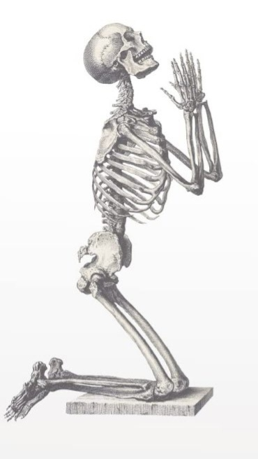

Handle me with little love and care
As I had missed it in my life affair
Was too poor for cremation or burial
That is why am lying in dissection hall
You dissect me, cut me, section me
But your learning anatomy should be precise
Worry not, you would not be taken to court
As I am happy to be with the bright lot
Couldn't dream of a fridge for cold water
Now my body parts are kept in refrigerator
Young students sit around me with friends
A few dissect, rest talk, about food, family and movies
How I enjoy the dissection periods
Don't you? Unless you are interrogated by a teacher
When my parts are buried post-dissection
Bones are taken out for the skeleton
Skeleton is the crown glory of the museum
Now I am being looked up by great enthusiasm
If not as skeletons as loose bones
I am in their bags and in their hostel rooms
At times, I am on their beds as well
Oh, what a promotion to heaven from hell
I won't leave you, even if you pass anatomy
Would follow you in forensic medicine and pathology
Would be with you even in clinical teaching
Medicine line is one where dead teach the living
One humble request I'd make
Be sympathetic to persons with disease
Don't panic, you'll have enough money
And I bet, you'd be singularly happy